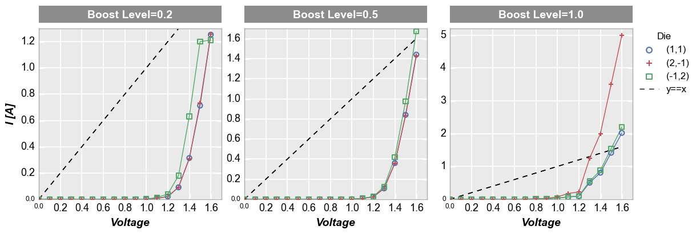

fivecentplots¶
–A Python plotting analgesic–
Why another Python plotting library?¶
fivecentplots exists to simplify plotting of data contained in a pandas DataFrames. While there is no shortage of quality Python plotting libraries on the world wide web (i.e., matplotlib, bokeh, seaborn, etc.), the APIs are daunting and often require excessive code to make the plot look just right. This complexity is especially discouraging to new or casual Python users and often results in them giving up on Python plotting in favor of inferior, yet simplar, plotting tools like Excel.
What issues does fivecentplots address?¶
1. Ease of Use
Plots require a single function call with all style and/or formatting parameters specified as optional keyword arguments or in a simple theme file.
Data come from pandas DataFrames eliminating direct management of numpy arrays
Data can be quickly grouped into subsets and visualized. This includes creating grids of subplots and legending by color and/or marker. All of these options are invoked simply by specifying DataFrame column names as appropriate keyword arugments
Multiple plotting backends (matplotlib, bokeh, etc.) can be used with virtually the same function call, eliminating the need to learn the unique syntax of each package.
Consider the following plot of some dummy data:
Using fivecentplots, we need a single function call with the appropriate keyword arguments:
fcp.plot(df, x='Voltage', y='I [A]', legend='Die', col='Boost Level', ax_size=[225, 225], share_y=False, filter='Substrate=="Si" & Target Wavelength==450 & Temperature [C]==25', ref_line=df['Voltage'], ref_line_legend_text='y==x', xmin=0, xmax=1.6, ymin=[0, 0, 0], ymax=[1.3, 1.8, 5.2])Contrast this with the code required in matplotlib:
df = pd.read_csv(osjoin(os.path.dirname(fcp.__file__), 'tests', 'fake_data.csv')) # Filter the dataframe df_sub = df[(df.Substrate=="Si")&(df['Target Wavelength']==450)&(df['Temperature [C]']==25)] # Set some defaults markers = ['o', '+', 's'] colors = ['#4b72b0', '#c34e52', '#54a767'] ymax = [1.3, 1.8, 5.2] lines = [] # Create the figure and axes f, axes = plt.subplots(1, 3, sharex=False, sharey=False, figsize=[9.82, 3.46]) # Plot the data and style the axes for iboost, boost in enumerate(df_sub['Boost Level'].unique()): df_boost = df_sub[df_sub['Boost Level']==boost] for idie, die in enumerate(natsort.natsorted(df_boost.Die.unique())): df_die = df_boost[df_boost.Die==die] axes[iboost].set_facecolor('#eaeaea') axes[iboost].grid(which='major', axis='both', linestyle='-', color='#ffffff', linewidth=1.3) lines += axes[iboost].plot(df_die['Voltage'], df_die['I [A]'], '-', color=colors[idie], marker=markers[idie], markeredgecolor=colors[idie], markerfacecolor='none', markeredgewidth=1.5, markersize=8) axes[iboost].set_axisbelow(True) axes[iboost].spines['bottom'].set_color('#aaaaaa') axes[iboost].spines['top'].set_color('#aaaaaa') axes[iboost].spines['right'].set_color('#aaaaaa') axes[iboost].spines['left'].set_color('#aaaaaa') if iboost==0: axes[iboost].set_ylabel('I [A]', fontsize=14, fontweight='bold', fontstyle='italic') axes[iboost].set_xlabel('Voltage', fontsize=14, fontweight='bold', fontstyle='italic') axes[iboost].set_xlim(left=0, right=1.6) axes[iboost].set_ylim(bottom=0, top=ymax[iboost]) # Add the column labels rect = matplotlib.patches.Rectangle((0, 1.044), 1, 30/225, fill=True, transform=axes[iboost].transAxes, facecolor='#8c8c8c', edgecolor='#8c8c8c', clip_on=False) axes[iboost].add_patch(rect) text = 'Boost Level = {}'.format(boost) axes[iboost].text(0.5, 1.111, text, transform=axes[iboost].transAxes, horizontalalignment='center', verticalalignment='center', rotation=0, color='#ffffff', weight='bold', size=16) # Customize ticks axes[iboost].tick_params(axis='both', which='major', pad=5, colors='#ffffff', labelsize=13, labelcolor='#000000', width=2.2) # Add reference line ref_line = df_die['Voltage'] ref = axes[iboost].plot(df_die['Voltage'], ref_line, '-', color='#000000', linewidth=1) if iboost == 0 : lines = ref + lines # Style the figure f.set_facecolor('#ffffff') f.subplots_adjust(left=0.077, right=0.882, top=0.827, bottom=0.176, hspace=0.133, wspace=0.313) # Add legend leg = f.legend(lines[0:4], ['y==x'] + list(df_boost.Die.unique()), title='Die', numpoints=1, bbox_to_anchor=(1, 0.85), prop={'size': 12}) leg.get_frame().set_edgecolor('#ffffff') # Show the plot plt.show()This example is a bit contrived as you can certainly plot data in matplotlib with fewer lines of code in a less visually appealing manner. We could simplify further by adding some of the style elements of this plot into a matplotlibrc file to avoid hard coding them. Regardless, the point should be clear: fivecentplots reduces the barrier to generate good-looking plots.
What if we wanted to do the same plot in bokeh? We’d need to learn an entirely different syntax! But in fivecentplots we can just change the plotting engine adding one additional keyword,
engine:fcp.plot(df, x='Voltage', y='I [A]', legend='Die', col='Boost Level', ax_size=[225, 225], share_y=False, filter='Substrate=="Si" & Target Wavelength==450 & Temperature [C]==25', ref_line=df['Voltage'], ref_line_legend_text='y==x', xmin=0, xmax=1.6, ymin=[0, 0, 0], ymax=[1.3, 1.8, 5.2], engine='bokeh')
Note
Bokeh does not currently have as much styling flexibility as matplotlib so plots are not a 1:1 exact replication. Also, support for bokeh plots in fivecentplots is still in development so mileage may vary. But the syntactic goal of fivecentplots should be clear.
2. Styles and colors
All colors, sizes, marker themes, etc. can be specified by optional keyword arguments in the function call or can be set from a theme file. This is arguably easier than trying to identify and modify various attributes of different embedded class objects.
3. Matplotlib Size Repeatability
In matplotlib the figure or image size is king. Consequently, the axes area containing the actual plotted data expands and contracts to accommodate other elements in the figure like labels and legends. This can often lead to unpleasing results which obscure the data of interest. In fivecentplots the plotting area size is fixed regardless of everything surrounding it and the overall figure size is scaled accordingly. The trade off for this feature is a slight slow-down in plot generation as we have to double render certain elements in order to determine their actual size.
4. Automation
In addition to explicit function calls, plots can be fully defined from ini-style config files making it easy automate creation of a batch of plots . These simple text files make it even easier for engineers and scientists to plot without requiring a deep knowledge of Python syntax.
5. JMP-style plots that would be tedious to create every time in raw code
With the development of pandas, statistical analysis in Python can rival or surpass that of popular commercial software packages like JMP. However, JMP has several plotting platforms that are very useful and would be tedious to create from scratch in Python. fivecentplot handles all of this work so you don’t have to, allowing you to create beautiful and often more flexible JMP-style plots with a single function call. Examples include:
Boxplots with grouping labels (i.e., variability charts):
While there are boxplot functions in Python plotting libraries, it is not easy to group data into multiple, labeled subgroups. Borrowing inspiration from the variability chart in JMP, fivecentplots makes this possible.
Grouped facet grid plots:
Like JMP’s grouped overlay plots, take any multi-variate DataFrame and separate it into grids of plots, each represeting a unique combination of factors